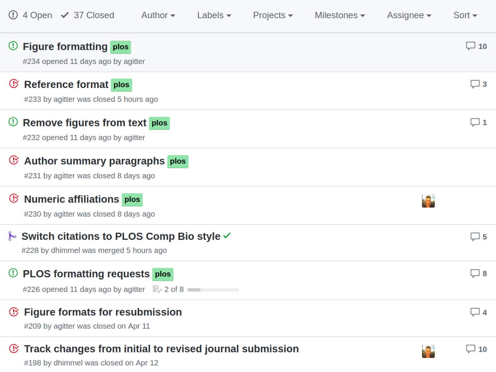
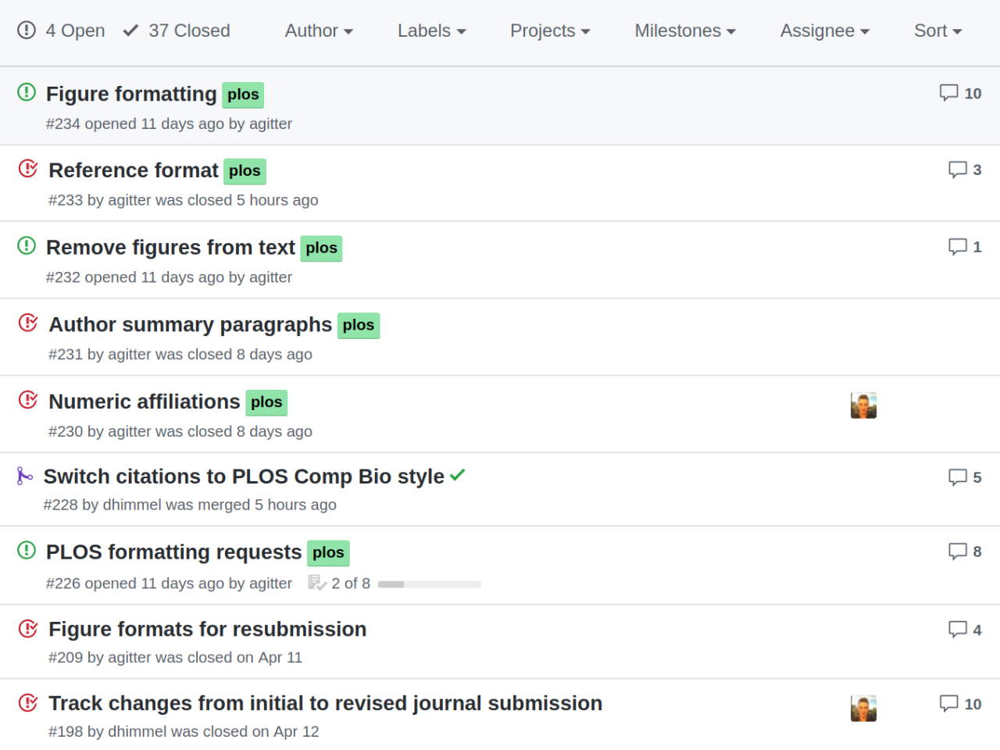

Manubot is a workflow and set of tools for the next generation of
scholarly publishing.
Write your manuscript in
markdown, track it with
git, automatically convert it to
.html, .pdf, or .docx, and deploy
it to your destination of choice.
How It Works


The Best Parts
Open, collaborative, versioned
Author your manuscript the open-source way. Let anyone propose changes. Iteratively review, discuss, and refine with collaborators. Coordinate teams of any size with ease. Keep track of versions, to-dos, revisions, and who wrote what and when. All in a central location.
 



Automated and continuous
Never use a reference manager again. Provide a DOI, ISBN, PubMed ID, URL, etc., and let Manubot generate and number citations for you. Choose from thousands of existing citation styles. See your manuscript update right away as you make changes. Test and deploy automatically with continuous integration.
Beautiful and interactive
Static is out, dynamic is in. The contemporary look and interactive features people have come to love and expect from modern webpages, now applied to scholarly articles: tooltips, public annotations, table of contents, figure viewer, and more.


Made With Manubot


Our Philosophy
Manuscripts are the primary basis of scholarly communication, yet the process of creating them has not kept in step with the advancement of technology or the evolving best-practices of science.
Traditionally, authoring of manuscripts takes place in a closed manner. While most scientific material is eventually distributed to some kind of public medium, the process of developing and reviewing the material is usually done in private, contained to a handful of individuals. The tools used are often outmoded, restrictive, and overall poorly-suited for the task of collaborative, scientific writing. The time it takes to review and publish can be unreasonably long.
We believe that this process is antiquated and must be reformed. Good science depends upon many things that the conventional approach doesn't provide: A diversity of input and perspectives. Spontaneous and cross-discipline contributions. Organic and wide-spread discovery and dissemination of knowledge. The fostering of a free, global information commons. A method of real-time, continuous science, performed entirely in the open.
Current technology easily affords huge advantages over the old way of doing things, both in convenience and in the quality of the result. Manubot is a solution to the past and a push towards a future ideal, where scientific writing is transparent, reproducible, immediate, permissionless, versioned, automated, collaborative, open, linked, provenanced, decentralized, hackable, interactive, annotated, and free of charge.
Cite Manubot
To reference the Manubot project, you can cite the following software paper (AKA the "Meta Review") describing the functionality and benefits of Manubot:
Take a look at the Manubot version of the paper and its source code.
Acknowledgements


Greene Lab
Univ. of Pennsylvania

Morgridge Institute
Univ. of Wisconsin-Madison
As an open source project, Manubot relies on a community of maintainers, contributors, and users. For a list of all the individuals who have made Manubot possible, see the contributors on GitHub and the authors and acknowledgements here.